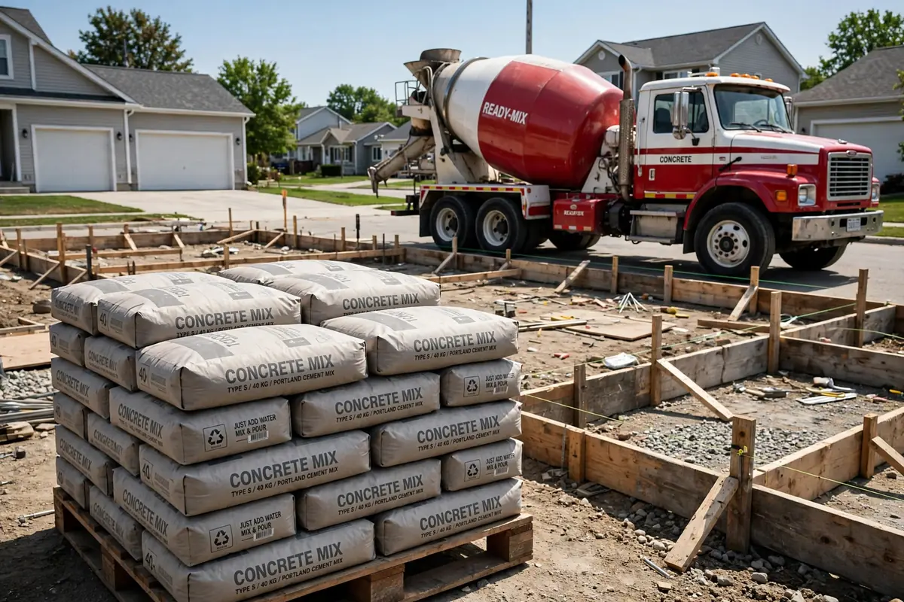
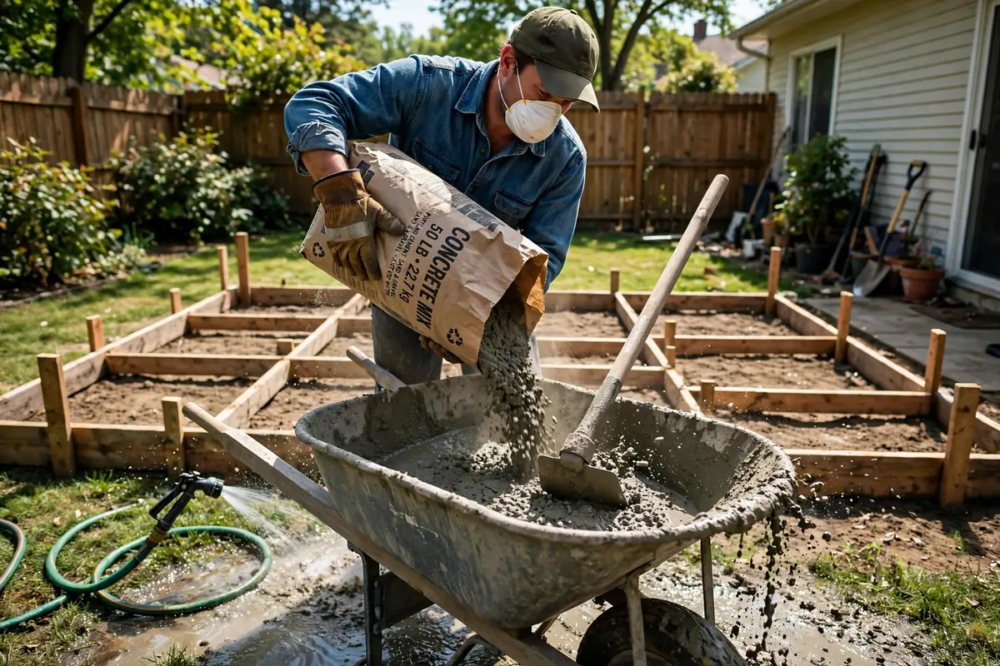
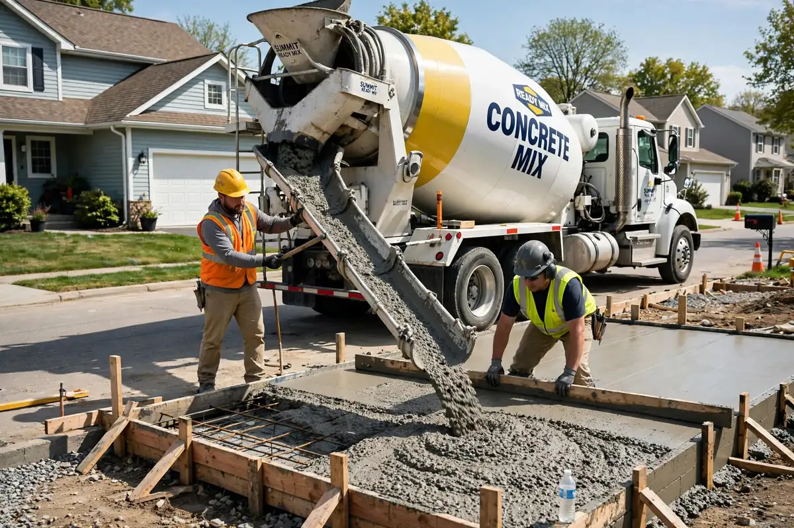

The short answer: below about 1 cubic yard, bagged concrete is cheaper. Above 1 cubic yard, a ready-mix truck usually wins on price alone — and the gap grows fast, because bags cost roughly $291 per cubic yard in material while ready-mix concrete itself is around $160 per yard. The only reason bags ever win is that the truck adds fixed fees (delivery plus a short-load fee on small orders) that punish tiny jobs. Once your project is big enough to spread those fees out, the truck is cheaper and does the mixing for you.
This guide shows the real maths — bag yields, shelf prices, delivery and short-load fees — so you can find the breakeven point for your own project instead of guessing.

First, the unit maths: how many bags are in a cubic yard?
Everything starts with yield — how much finished concrete one bag makes. From the QUIKRETE Concrete Mix data sheet (No. 1101), the standard figures are:
| Bag size | Yield per bag | Bags per cubic yard | Weight you handle per yard |
|---|---|---|---|
| 40 lb | 0.30 cu ft | 90 bags | 3,600 lb |
| 60 lb | 0.45 cu ft | 60 bags | 3,600 lb |
| 80 lb | 0.60 cu ft | 45 bags | 3,600 lb |
The maths is simple: a cubic yard is 27 cubic feet, so 27 ÷ 0.60 = 45 bags of 80-lb mix per yard. Whichever bag size you pick, one cubic yard of concrete means moving about 3,600 lb of dry mix — into your cart, into your vehicle, out of your vehicle, and into the mixer. Remember that number; it matters later.
Not sure how many yards your project needs? Run the dimensions through our concrete calculator first — every price below is built per cubic yard, so your yardage is the one number that decides everything.
What bags really cost per yard
Shelf prices for bagged mix, checked at major US retailers in November 2026:
- 80-lb QUIKRETE Concrete Mix: about $6.47 a bag at Home Depot (store checks in late October–November 2026 ranged from $5.98 to $6.98 depending on the city; buying a full 42-bag pallet drops it to about $6.15).
- 60-lb bags: about $4.85 a bag (checked range $4.68–$4.85).
Now the part most people never do — converting to cost per cubic yard:
- 80-lb bags: 45 bags × $6.47 = $291.15 per cubic yard
- 60-lb bags: 60 bags × $4.85 = $291.00 per cubic yard
The two sizes land within cents of each other. Bigger bags are easier on your back per trip, not cheaper per yard. And that $291 is before the standard 10% waste allowance — order for a real project and you're effectively paying about $320 per yard of placed concrete. If you don't own a mixer, add a rental: a small electric mixer typically runs $50–$100 per day at big-box rental counters, depending on the market.
What ready-mix really costs (it's not just the per-yard price)
Ready-mix is quoted per cubic yard, and the concrete itself is far cheaper than bags: the National Ready Mixed Concrete Association's member survey put the average selling price at $160 per cubic yard, and published supplier price lists in late 2026 run from about $127 to $195 a yard depending on the region. So why doesn't the truck always win? Because of the fees stacked on top:
- Delivery / fuel / environmental fees: typically $60–$95 per load as a flat charge.
- Short-load fee: a ready-mix truck carries 9–11 yards. Order less than a full load — especially under about 4 yards — and most plants add a short-load fee. National cost guides put it at roughly $40–$60 per cubic yard on small orders; some plants charge a flat $50–$200 instead.
- Minimums: many plants won't dispatch a truck for less than 1 yard at all, and a few effectively price tiny orders out of the market.
To make the comparison honest, here is the model used for the table below (check your local plant's numbers against it — your quote will differ, the shape of the maths won't):
The breakeven table: bags vs ready-mix by project size
Bag costs include the standard 10% waste allowance, using 80-lb bags at $6.47. Ready-mix uses the model above, ordered in quarter-yard steps. Prices checked November 2026; both columns exclude tax, forms, reinforcement and finishing tools, which are the same either way.
| Project | Concrete needed | Bags (80-lb) | Bag cost | Ready-mix total | Winner |
|---|---|---|---|---|---|
| Fence posts / small footings | 0.25 yd³ | 13 bags | ~$84 | Most plants won't deliver this little | Bags |
| Small pad, 8×8 ft at 4″ | 0.79 yd³ | 40 bags | ~$259 | ~$285 (1 yd order) | Bags, barely |
| Patio, 10×10 ft at 4″ | 1.23 yd³ | 62 bags | ~$401 | ~$390 (1.5 yd order) | Truck, barely |
| Shed pad, 10×20 ft at 4″ | 2.47 yd³ | 123 bags | ~$796 | ~$653 (2.75 yd order) | Truck by ~$143 |
| Driveway section, 12×24 ft at 4″ | 3.56 yd³ | 176 bags | ~$1,139 | ~$715 (4 yd order) | Truck by ~$424 |
| Driveway, 20×24 ft at 4″ | 5.93 yd³ | 294 bags | ~$1,902 | ~$1,115 (6.5 yd order) | Truck by ~$787 |
The breakeven point sits at roughly 1 cubic yard — a slab of about 9×9 ft at 4 inches thick. Below it, the truck's delivery and short-load fees cost more than the concrete saves. Above it, the fees are spread over enough yards that ready-mix wins on material price alone, before you count a single hour of your own labour.
Two honest caveats. First, the exact crossover moves with your local prices: cheap bags and an expensive plant can push it toward 1.5 yards; a plant with no short-load fee pulls it below 1 yard. Second, at the smallest sizes the comparison is academic — for a quarter-yard footing job there is often no truck option at any price. Working on footings? Our footing calculator gives you the yardage per hole.
The hidden cost of bags: your time and your back
Price is only half the decision. The other half is what 45 bags per yard actually means on pour day.

The lifting
One cubic yard in 80-lb bags is 3,600 lb of material, and you handle most of it three or four times: shelf to cart, cart to vehicle, vehicle to mixer, mixer to forms. A 10×10 patio is 62 bags — just under 5,000 lb of bags before you've placed a single shovelful of wet concrete.
The mixing time
A small two-bag electric mixer produces roughly 1.2 cubic feet per batch. Even with a helper and a good rhythm — load, mix, wheel, place, repeat — plan on several hours of continuous mixing per cubic yard, and concrete work is unforgiving about pauses: a slab poured in batches over a long day risks cold joints and visible seams between batches mixed hours apart. Mixing in a wheelbarrow by hand is slower still, and batch-to-batch consistency suffers.
The consistency
Ready-mix arrives as one uniform batch at a specified strength (typically 3,000–4,000 psi for residential work), mixed under plant quality control. Bagged concrete is exactly as good as your water measuring: too much water in one batch weakens it, and hand-mixed batches vary. For a garden path that hardly matters. For a driveway that carries vehicles, it can.
The scheduling trade-off cuts both ways
Bags wait for you: buy them Saturday, pour Sunday, pour half now and half next weekend. A truck does not wait — it arrives on the plant's schedule, the clock starts on your unloading time, and your forms, crew and weather window all have to be ready at once. For phased projects (footings one weekend, a pad the next), bags' flexibility is a genuine advantage that no price table captures.
Access matters too
A ready-mix truck is a heavy vehicle that needs to reach within chute distance of your forms (a standard chute reaches roughly 12–16 feet; beyond that you're wheelbarrowing from the truck anyway, or paying for a pump). A backyard project with a narrow gate may be bag-and-wheelbarrow territory no matter what the maths says. Conversely, if the truck can back right up to your driveway forms, placement takes minutes instead of hours.
When bags win, and when the truck wins
Choose bags when:
- The job is under about 1 cubic yard — fence posts, footings, a small pad, a repair.
- The project is phased or uncertain, and you want to pour in stages.
- Truck access is poor (narrow gates, soft ground, long wheelbarrow runs either way).
- The nearest plant has high minimums or won't take small orders.
Choose ready-mix when:
- The job is over about 1 cubic yard — most patios, shed pads and every driveway.
- It's a single continuous slab where batch consistency and a fast, even pour matter.
- The truck can reach the forms, and you can have everything ready for one delivery window.
- Your time has any value at all: past 2 yards, bags lose on price and cost you a full day of heavy labour.

One middle option worth knowing: for jobs in the 1–3 yard grey zone, ask local plants about their smallest-load terms before deciding — some run dedicated short-load or volumetric (mix-on-site) trucks that price small pours far more kindly than a standard plant's short-load fee. And whatever you choose, get your exact yardage first with the slab calculator, then sanity-check the budget on the cost calculator.
Worked example: the 10×10 patio
The classic DIY pour, step by step:
- Volume: 10 ft × 10 ft × 4 in = 33.3 cu ft = 1.23 yd³. Add 10% waste → plan on 1.36 yd³.
- Bags: 1.36 yd³ × 45 bags = 62 bags of 80-lb mix → 62 × $6.47 = ~$401, plus ~$50–$100 if you rent a mixer. Total handled weight: ~4,960 lb.
- Ready-mix: order 1.5 yd³ → (1.5 × $160) + $75 delivery + (1.5 × $50) short-load = ~$390, placed in minutes.
- Verdict: the prices are within a few dollars of each other — which is exactly why the 10×10 patio is the textbook breakeven project. If you own a mixer and enjoy the work, bags are fine. If you're renting a mixer or value your Saturday, the truck wins this one.
Run your own dimensions in the concrete calculator and convert the yardage to a bag count with the bag calculator — then compare against a real quote from your local plant using the fee structure above.
Frequently Asked Questions
45 bags of 80-lb mix, 60 bags of 60-lb mix, or 90 bags of 40-lb mix. Each figure comes from the manufacturer's yield per bag (0.60, 0.45 and 0.30 cubic feet respectively) divided into 27 cubic feet.
Per cubic yard of material, yes, by a lot — roughly $160 a yard vs about $291 a yard in bags. But delivery and short-load fees make ready-mix the more expensive option on jobs under about 1 cubic yard. Past that point, ready-mix is cheaper overall.
A charge plants add when you order less than a full truckload (9–11 yards), most commonly on orders under about 4 yards. Typical figures run $40–$60 per cubic yard, though some plants charge a flat fee instead. Always ask for it when you get a quote — it's the line item that decides bags vs truck on small jobs.
At November 2026 national figures, a 1-yard order typically totals $232–$311 once delivery and short-load fees are added; larger orders approach the $160-per-yard concrete price plus one flat delivery fee. Prices vary widely by region — published per-yard prices alone run from about $127 to $195.
Physically, yes, with a rented mixer and a helper — people do it. But expect a full, heavy day: 123 bags for a 10×20 shed pad is about 9,840 lb of dry mix handled repeatedly, mixed in dozens of small batches while the first batches are already setting. Above roughly 60–70 bags, most DIYers who have done it once order the truck the second time.